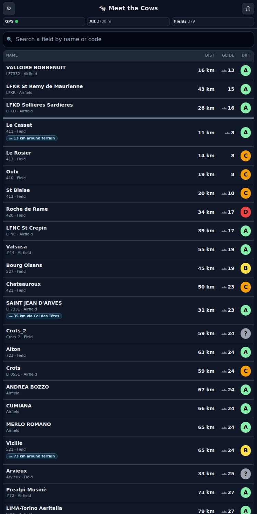
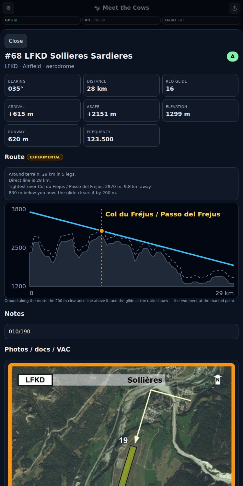

Une aide cockpit pour les vélivoles des Alpes. Les terrains et aérodromes proches, classés par la finesse qu’il vous faudrait depuis là où vous êtes — avec les fiches, les photos et les cartes officielles qui disent à quoi vous vous engagez. Tout tient dans le téléphone, donc ça marche sans réseau.


Chaque terrain affiche la finesse qu’il vous faudrait depuis votre position et votre altitude du moment — pas seulement la distance.
Les terrains gardent leur cotation du Guide des Aires, pour qu’un pré court, en pente et barré de fossés ne ressemble jamais à un aérodrome.
De vraies descriptions — approche, surface, dangers — traduites en français, anglais et allemand, et conservées telles quelles dans leur langue d’origine.
Cartes VAC et d’aérodrome des AIP française, autrichienne, allemande et italienne, rattachées aux terrains auxquels elles appartiennent.
Choisissez vos régions une fois en Wi-Fi. Ensuite l’application n’a plus besoin que du GPS — ni réseau, ni forfait data, ni compte.
Les données se reconstruisent chaque nuit et suivent les cycles AIRAC, pour que les cartes ne vieillissent pas en silence dans votre poche.
Téléchargez vos régions chez vous, en Wi-Fi. Un jeu complet de packs pèse quelques centaines de mégaoctets — pas le genre de chose à lancer sur le terrain.
Couvre la France, la Suisse, l’Allemagne, l’Italie et l’Autriche.
planeur-net — le Guide des Aires de Sécurité et les recueils de terrains qui l’accompagnent.
SIA (France), Austro Control, DFS (Allemagne) et ENAV (Italie), chacune utilisée selon ses propres conditions.
OpenAIP, pour repérer et situer les aérodromes utiles au vol à voile.
Corrections, notes et photos envoyées depuis l’application — chacune relue avant d’arriver chez les autres.
Vous vous êtes posé quelque part et la fiche n’était plus à jour ? Envoyez une correction ou une photo directement depuis la page du terrain, dans l’application. Chaque envoi est relu avant publication, et les données s’en portent mieux.